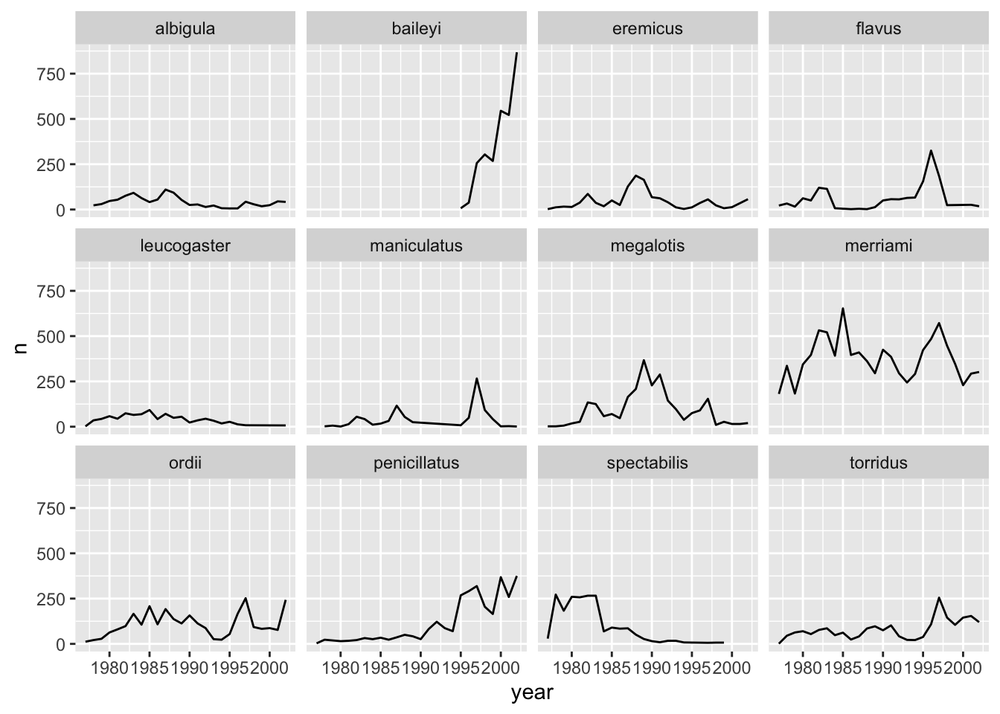
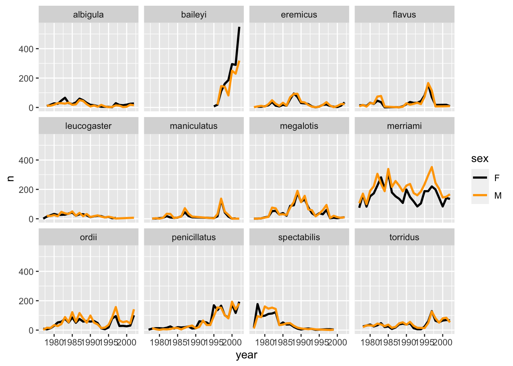
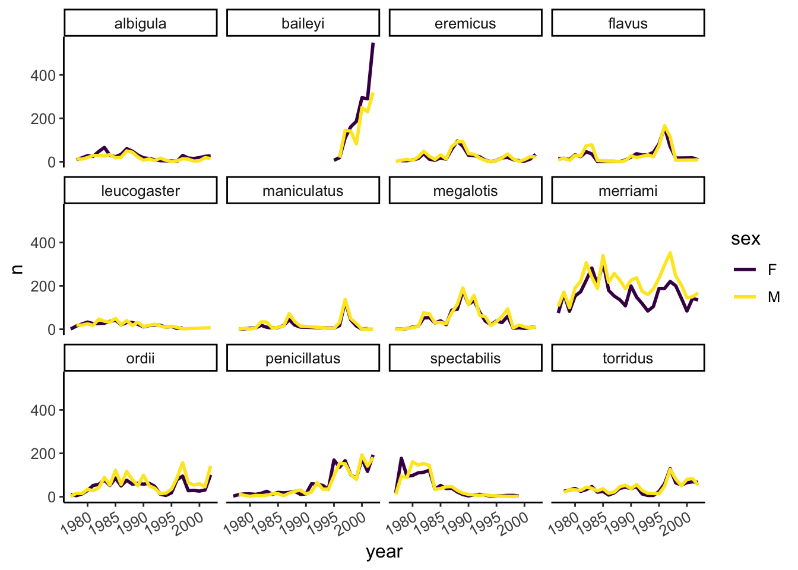
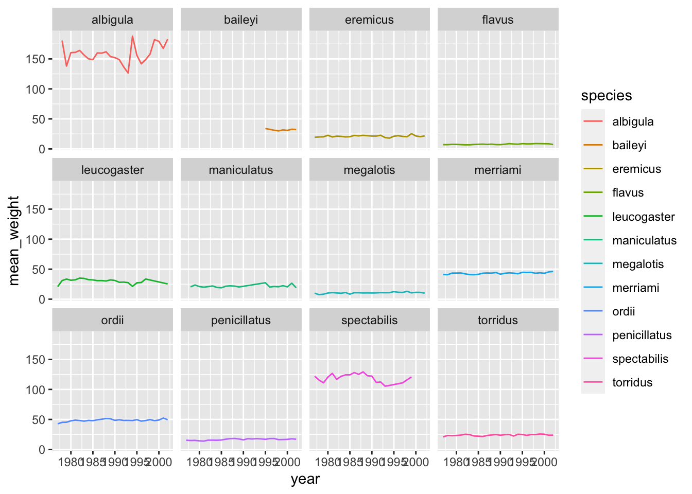

library(tidyverse)4 Summarizing and visualizating data
4.1 Lesson preamble
4.1.1 Learning Objectives
- Use ggplot to create simple scatterplots
- Vary
x,y, andcolourvariables in scatterplots to understand trends in data- Use
group_by,summarize,tally,andarrangeto split a data frame into groups of observations, apply a summary statistics for each group, and then combine the results- Use
summarize_allto calculate a summary statistic for an entire data frame- Remove missing data using
is.naorna.omit- Combine data manipulation with data visualization using split-apply-combine techniques, along with the pipe (
%>%) and layering (+) operators
Last lecture we learned about the impressive data collected in the long-term Portal desert ecology study and had a chance to look through some of the variables, but since there were so many data points (over 30,000!) and so many variables collected, it was hard to get a sense for what was really going on. There’s lot more analysis we can run, but usually it helps to first actually see what the data actually looks like. Luckily, our favourite package-of-packages tidyverse has us covered – it comes with a wonderful package for generating graphics called ggplot2!
We can load tidyverse into our current R session:
Now we’ll reload the data that we previously downloaded (and saved locally):
surveys <- readr::read_csv('data/portal_data.csv')Rows: 34786 Columns: 13
── Column specification ────────────────────────────────────────────────────────
Delimiter: ","
chr (6): species_id, sex, genus, species, taxa, plot_type
dbl (7): record_id, month, day, year, plot_id, hindfoot_length, weight
ℹ Use `spec()` to retrieve the full column specification for this data.
ℹ Specify the column types or set `show_col_types = FALSE` to quiet this message.(If you weren’t able to successfully save it last time, you can instead read it in directly from the website):
surveys <- readr::read_csv("https://ndownloader.figshare.com/files/2292169")And let’s remind ourselves of the data structure by printing off a few of the entries
surveys[seq(1,nrow(surveys),1000),] # pick out every 1000th entry# A tibble: 35 × 13
record_id month day year plot_id species_id sex hindfoot_length weight
<dbl> <dbl> <dbl> <dbl> <dbl> <chr> <chr> <dbl> <dbl>
1 1 7 16 1977 2 NL M 32 NA
2 5282 1 25 1982 2 DS M 52 82
3 13321 8 26 1987 2 AB <NA> NA NA
4 16167 6 4 1989 3 SH F 29 60
5 121 8 21 1977 15 NL <NA> NA NA
6 35176 11 10 2002 15 PB F 26 36
7 18921 8 7 1991 17 PF F 16 8
8 32062 5 26 2001 17 PB M 27 29
9 25542 4 12 1997 12 DM F 35 42
10 21937 12 4 1994 12 DO M 38 47
# ℹ 25 more rows
# ℹ 4 more variables: genus <chr>, species <chr>, taxa <chr>, plot_type <chr>4.2 Plotting with ggplot2
ggplot2 is a plotting package that makes it simple to create complex plots from data frames. The name ggplot2 comes from its inspiration, the book A Grammar of Graphics, and the main goal is to allow coders to distill complex data structure and express their desired graphical outcome in a concise manner instead of telling the computer every detail about what should happen. For example, you would say “colour my data by species” instead of “go through this data frame and plot any observations of species1 in blue, any observations of species2 in red, etc”. Thanks to this functional way of interfacing with data, only minimal changes are required if the underlying data change or if you want to try a different type of visualization. Publication-quality plots can be created with minimal amounts of adjustment and tweaking.
ggplot2 graphics are built step by step by adding new elements, or layers. Adding layers in this fashion allows for extensive flexibility and customization of plots. To build a ggplot, we need to:
1. Use the ggplot() function and bind the plot to a specific data frame using the data argument
ggplot(data = surveys)
Remember, if the arguments are provided in the right order then the names of the arguments can be omitted.
ggplot(surveys)
# You can also use the %>% operator to pass the data to ggplot
surveys %>%
ggplot()
2. Define aesthetics (aes), by selecting the columns to be plotted and the presentation variables (ex: point size, shape, colour, etc.)
ggplot(surveys, aes(x = weight, y = hindfoot_length))
3. Add geoms – geometrical objects as a graphical representation of the data in the plot (points, lines, bars). ggplot2 offers many different geoms. We will use a few common ones today, including: * geom_point() for scatter plots, dot plots, etc. * geom_line() for trend lines, time-series, etc. * geom_histogram() for histograms
To add a geom to the plot use + operator. Because we have two continuous variables (weight and hindfoot_length), let’s use geom_point() first:
ggplot(surveys, aes(x = weight, y = hindfoot_length)) +
geom_point()Warning: Removed 4048 rows containing missing values or values outside the scale range
(`geom_point()`).
Note: Notice that triangle-! warning sign above the plot? ggplot is telling you that it wasn’t able to plot all of your data. Typically this means that there are NAs in the data, or that some data points lie outside of the bounds of the axes. Can you figure what it is in this instance?
The + in the ggplot2 package is particularly useful because it allows you to modify existing ggplot objects. This means you can easily set up plot “templates” and conveniently explore different types of plots. The above plot can be generated with code like this:
# Assign plot to a variable
surveys_plot <- ggplot(surveys, aes(x = weight, y = hindfoot_length))
# Draw the plot
surveys_plot + geom_point()Warning: Removed 4048 rows containing missing values or values outside the scale range
(`geom_point()`).Three notes:
Anything you put in the top
ggplot()call can be seen/used by any geom layers that you add, including the x and y axis variables you set up inaes(). These are essentially universal plot settings.You can specify aesthetics for a geom independently of the aesthetics defined by
ggplot(), which is particularly handy when you’re layering data from different data framesThe
+sign used to add layers must be placed at the end of each line containing a layer. If it’s used at the start of line,ggplot2will not add the new layer and R will return an error message.
4.2.1 Building plots iteratively
Building plots with ggplot is typically an iterative process. Start simply. We will define the dataset to use, lay the axes, and choose one geom, as we just did:
ggplot(surveys, aes(x = weight, y = hindfoot_length)) +
geom_point()Warning: Removed 4048 rows containing missing values or values outside the scale range
(`geom_point()`).
Then, we start modifying this plot to extract more information from it. For instance, we can add the argument for transparency (alpha) to reduce overplotting:
ggplot(data = surveys, aes(x = weight, y = hindfoot_length)) +
geom_point(alpha = 0.2)Warning: Removed 4048 rows containing missing values or values outside the scale range
(`geom_point()`).
Based on the hindfoot length and the weights, there appears to be 4 clusters in this data. Potentially, one of the categorical variables we have in the data could explain this pattern. Colouring the data points according to a categorical variable is an easy way to find out if there seems to be correlation. Let’s try colouring this points according to plot_type. As a reminder, this variable keeps track of whether the plot was subjected to one of the environmental manipulations, and in this teaching dataset, plot_type refers only to the types of rodents that were excluded from the plot).
First, let’s check how many different types of plots there are - if there’s too many types, we’ll need a lot of colours, and our plot could get messy fast! We can use the unique function, which works on any vector (including dataframe columns) to list all the unique values
unique(surveys$plot_type)[1] "Control" "Long-term Krat Exclosure"
[3] "Short-term Krat Exclosure" "Rodent Exclosure"
[5] "Spectab exclosure" We can then could up how many unique values there are. 5 seems like a reasonable number!
length(unique(surveys$plot_type))[1] 5ggplot(surveys, aes(x = weight, y = hindfoot_length, colour = plot_type)) +
geom_point(alpha = 0.2)Warning: Removed 4048 rows containing missing values or values outside the scale range
(`geom_point()`).
It seems like the type of plot the animal was captured on correlates well with some of these clusters, but there are still many that are quite mixed. Let’s try to do better!
4.2.1.1 Challenge
- Come up with a hypothesis to explain why the plot type seems to be related to the height-weight clusters
- Try colouring your plot based on 1 or 2 of the other dataset variables. In each case, try to state what is the specific hypothesis you have in mind when choosing the variable
4.3 Split-apply-combine
Before we dig further into trying to explain these clusters, we need to learn a few more techniques for aggregating and analyzing data.
Many data analysis tasks can be approached using the split-apply-combine paradigm: split the data into groups, apply some analysis to each group, and then combine the results.
4.3.1 Summarizing data by group with simple statistics
dplyr facilitates this workflow through the use of group_by() to split data and summarize(), which collapses each group into a single-row summary of that group. The arguments to group_by() are the column names that contain the categorical variables for which you want to calculate the summary statistics. Let’s view the mean weight by sex.
surveys %>%
group_by(sex) %>%
summarize(mean_weight = mean(weight))# A tibble: 3 × 2
sex mean_weight
<chr> <dbl>
1 F NA
2 M NA
3 <NA> NAThe mean weights become NA since there are individual observations that are NA. Let’s remove those observations.
surveys %>%
filter(!is.na(weight)) %>%
group_by(sex) %>%
summarize(mean_weight = mean(weight))# A tibble: 3 × 2
sex mean_weight
<chr> <dbl>
1 F 42.2
2 M 43.0
3 <NA> 64.7There is one row here that is neither male nor female, these are observations where the animal escaped before the sex could not be determined. Let’s remove those as well.
surveys %>%
filter(!is.na(weight) & !is.na(sex)) %>%
group_by(sex) %>%
summarize(mean_weight = mean(weight))# A tibble: 2 × 2
sex mean_weight
<chr> <dbl>
1 F 42.2
2 M 43.0You can also group by multiple columns:
surveys %>%
filter(!is.na(weight) & !is.na(sex)) %>%
group_by(genus, sex) %>%
summarize(mean_weight = mean(weight))`summarise()` has grouped output by 'genus'. You can override using the
`.groups` argument.# A tibble: 20 × 3
# Groups: genus [10]
genus sex mean_weight
<chr> <chr> <dbl>
1 Baiomys F 9.16
2 Baiomys M 7.36
3 Chaetodipus F 23.8
4 Chaetodipus M 24.7
5 Dipodomys F 55.2
6 Dipodomys M 56.2
7 Neotoma F 154.
8 Neotoma M 166.
9 Onychomys F 26.8
10 Onychomys M 26.2
11 Perognathus F 8.57
12 Perognathus M 8.20
13 Peromyscus F 22.5
14 Peromyscus M 20.6
15 Reithrodontomys F 11.2
16 Reithrodontomys M 10.2
17 Sigmodon F 71.7
18 Sigmodon M 61.3
19 Spermophilus F 57
20 Spermophilus M 130 Since we will use the same filtered and grouped data frame in multiple code chunks below, we could assign this subset of the data to a new variable and use this variable in the subsequent code chunks instead of typing out the functions each time.
filtered_surveys <- surveys %>%
filter(!is.na(weight) & !is.na(sex)) %>%
group_by(genus, sex)If you want to display more data, you can use the print() function at the end of your chain with the argument n specifying the number of rows to display.
filtered_surveys %>%
summarize(mean_weight = mean(weight)) %>%
print(n = 15) # Will change the knitted output, not the notebook`summarise()` has grouped output by 'genus'. You can override using the
`.groups` argument.# A tibble: 20 × 3
# Groups: genus [10]
genus sex mean_weight
<chr> <chr> <dbl>
1 Baiomys F 9.16
2 Baiomys M 7.36
3 Chaetodipus F 23.8
4 Chaetodipus M 24.7
5 Dipodomys F 55.2
6 Dipodomys M 56.2
7 Neotoma F 154.
8 Neotoma M 166.
9 Onychomys F 26.8
10 Onychomys M 26.2
11 Perognathus F 8.57
12 Perognathus M 8.20
13 Peromyscus F 22.5
14 Peromyscus M 20.6
15 Reithrodontomys F 11.2
# ℹ 5 more rowsOnce the data are grouped, you can also summarize multiple variables at the same time. For instance, we could add a column indicating the minimum weight for each species for each sex:
filtered_surveys %>%
summarize(mean_weight = mean(weight),
min_weight = min(weight))`summarise()` has grouped output by 'genus'. You can override using the
`.groups` argument.# A tibble: 20 × 4
# Groups: genus [10]
genus sex mean_weight min_weight
<chr> <chr> <dbl> <dbl>
1 Baiomys F 9.16 6
2 Baiomys M 7.36 6
3 Chaetodipus F 23.8 5
4 Chaetodipus M 24.7 4
5 Dipodomys F 55.2 10
6 Dipodomys M 56.2 12
7 Neotoma F 154. 32
8 Neotoma M 166. 30
9 Onychomys F 26.8 5
10 Onychomys M 26.2 9
11 Perognathus F 8.57 4
12 Perognathus M 8.20 4
13 Peromyscus F 22.5 8
14 Peromyscus M 20.6 7
15 Reithrodontomys F 11.2 4
16 Reithrodontomys M 10.2 4
17 Sigmodon F 71.7 15
18 Sigmodon M 61.3 16
19 Spermophilus F 57 57
20 Spermophilus M 130 130If we don’t want to make any groups and want to summarize all the columns, we can instead use summarize_all
filtered_surveys %>%
summarize_all(mean)Warning: There were 80 warnings in `summarise()`.
The first warning was:
ℹ In argument: `species_id = (function (x, ...) ...`.
ℹ In group 1: `genus = "Baiomys"` `sex = "F"`.
Caused by warning in `mean.default()`:
! argument is not numeric or logical: returning NA
ℹ Run `dplyr::last_dplyr_warnings()` to see the 79 remaining warnings.# A tibble: 20 × 13
# Groups: genus [10]
genus sex record_id month day year plot_id species_id hindfoot_length
<chr> <chr> <dbl> <dbl> <dbl> <dbl> <dbl> <dbl> <dbl>
1 Baiomys F 18658. 6.39 13.4 1991. 10.9 NA 13.2
2 Baiomys M 18386. 8.21 11.6 1990. 10.2 NA 12.6
3 Chaetod… F 28223. 7.20 16.2 1998. 11.7 NA NA
4 Chaetod… M 28352. 6.95 16.3 1998. 11.1 NA NA
5 Dipodom… F 14278. 6.37 16.1 1988. 10.5 NA NA
6 Dipodom… M 15251. 6.25 16.1 1989. 10.2 NA NA
7 Neotoma F 14624. 6.89 16.8 1988. 12.6 NA NA
8 Neotoma M 13741. 6.97 17.0 1987. 11.1 NA NA
9 Onychom… F 17170. 6.94 16.4 1990. 10.7 NA NA
10 Onychom… M 17313. 7.07 16.3 1990. 10.5 NA NA
11 Perogna… F 18100. 6.90 16.6 1991. 13.5 NA NA
12 Perogna… M 16955. 6.27 17.1 1990. 12.9 NA NA
13 Peromys… F 17913. 6.34 16.4 1991. 13.6 NA NA
14 Peromys… M 17187. 6.40 17.2 1990. 13.4 NA NA
15 Reithro… F 16300. 5.74 14.8 1989. 13.5 NA NA
16 Reithro… M 16633. 5.33 15.2 1990. 13.9 NA NA
17 Sigmodon F 18456. 6.04 12.6 1991. 10.9 NA NA
18 Sigmodon M 21166. 6.15 14.4 1993. 11.9 NA NA
19 Spermop… F 4875 10 24 1981 20 NA NA
20 Spermop… M 1002 6 9 1978 14 NA NA
# ℹ 4 more variables: weight <dbl>, species <dbl>, taxa <dbl>, plot_type <dbl>This gives errors since some columns are strings, not numbers, we get a warning. A summary statistic that works for all columns is to count the number of distinct values that variable can take:
surveys %>%
summarize_all(n_distinct)# A tibble: 1 × 13
record_id month day year plot_id species_id sex hindfoot_length weight
<int> <int> <int> <int> <int> <int> <int> <int> <int>
1 34786 12 31 26 24 48 3 57 256
# ℹ 4 more variables: genus <int>, species <int>, taxa <int>, plot_type <int>4.3.1.1 Challenge
Use
group_by()andsummarize()to find the mean, min, and max hindfoot length for each species.What was the heaviest animal measured in each year? Return the columns
year,genus,species, andweight.
4.3.2 Using tally to summarize categorical data
When working with data, it is also common to want to know the number of observations found for each factor or combination of factors. For this, dplyr provides tally(). For example, if we want to group by taxa and find the number of observations for each taxa, we would do:
surveys %>%
group_by(taxa) %>%
tally()# A tibble: 4 × 2
taxa n
<chr> <int>
1 Bird 450
2 Rabbit 75
3 Reptile 14
4 Rodent 34247We can also use tally() when grouping on multiple variables:
surveys %>%
group_by(taxa, sex) %>%
tally()# A tibble: 6 × 3
# Groups: taxa [4]
taxa sex n
<chr> <chr> <int>
1 Bird <NA> 450
2 Rabbit <NA> 75
3 Reptile <NA> 14
4 Rodent F 15690
5 Rodent M 17348
6 Rodent <NA> 1209Here, tally() is the action applied to the groups created by group_by() and counts the total number of records for each category.
If there are many groups, tally() is not that useful on its own. For example, when we want to view the five most abundant species among the observations:
surveys %>%
group_by(species) %>%
tally()# A tibble: 40 × 2
species n
<chr> <int>
1 albigula 1252
2 audubonii 75
3 baileyi 2891
4 bilineata 303
5 brunneicapillus 50
6 chlorurus 39
7 clarki 1
8 eremicus 1299
9 flavus 1597
10 fulvescens 75
# ℹ 30 more rowsSince there are 40 rows in this output, we would like to order the table to display the most abundant species first. In dplyr, we say that we want to arrange() the data.
surveys %>%
group_by(species) %>%
tally() %>%
arrange(n)# A tibble: 40 × 2
species n
<chr> <int>
1 clarki 1
2 scutalatus 1
3 tereticaudus 1
4 tigris 1
5 uniparens 1
6 viridis 1
7 leucophrys 2
8 savannarum 2
9 fuscus 5
10 undulatus 5
# ℹ 30 more rowsStill not that useful. Since we are interested in the most abundant species, we want to display those with the highest count first, in other words, we want to arrange the column n in descending order:
surveys %>%
group_by(species) %>%
tally() %>%
arrange(desc(n)) %>%
head(5)# A tibble: 5 × 2
species n
<chr> <int>
1 merriami 10596
2 penicillatus 3123
3 ordii 3027
4 baileyi 2891
5 megalotis 2609If we want to include more attributes about these species, we can include these in the call to group_by():
surveys %>%
group_by(species, taxa, genus) %>%
tally() %>%
arrange(desc(n)) %>%
head(5)# A tibble: 5 × 4
# Groups: species, taxa [5]
species taxa genus n
<chr> <chr> <chr> <int>
1 merriami Rodent Dipodomys 10596
2 penicillatus Rodent Chaetodipus 3123
3 ordii Rodent Dipodomys 3027
4 baileyi Rodent Chaetodipus 2891
5 megalotis Rodent Reithrodontomys 2609Be careful not to include anything that would split the group into subgroups, such as sex, year etc.
4.3.2.1 Challenge
How many individuals were caught in each
plot_typesurveyed?You saw above how to count the number of individuals of each
sexusing a combination ofgroup_by()andtally(). How could you get the same result usinggroup_by()andsummarize()? Hint: see?n.
4.4 Split-apply-combine… plot!
Now we’ll come back to trying to understand our weight-vs-hindfoot length data, but armed with more tools! We’ll see how combining just a handful of tools from the dplyr and ggplot packages, we can create a powerful data exploration workflow.
Glancing at our prior plot, we can get a clues to which explanatory variable to look at next. The plot above suggests that there might be 4 clusters, so a variable with 4 values is a good guess for what could explain the observed pattern in the scatter plot. Let’s figure out which variable that is.
surveys %>%
summarize_all(n_distinct) # A tibble: 1 × 13
record_id month day year plot_id species_id sex hindfoot_length weight
<int> <int> <int> <int> <int> <int> <int> <int> <int>
1 34786 12 31 26 24 48 3 57 256
# ℹ 4 more variables: genus <int>, species <int>, taxa <int>, plot_type <int># `n_distinct` is a function that counts unique values in a set of vectorsRemember that there are still NA values here, that’s why there are 3 unique sexes although only male and female were coded in our original data set. There are four taxa, so maybe that could be a good candidate to explain the clusters? Let’s check it out!
surveys %>%
distinct(taxa)# A tibble: 4 × 1
taxa
<chr>
1 Rodent
2 Rabbit
3 Bird
4 Reptile# alternatively, we could have ran unique(surveys$sex)It seems reasonable that these taxa contain animals different enough to have diverse weights and length of their feet. Lets use this categorical variable to colour the scatter plot.
ggplot(surveys, aes(x = weight, y = hindfoot_length, colour = taxa)) +
geom_point(alpha = 0.2)Warning: Removed 4048 rows containing missing values or values outside the scale range
(`geom_point()`).
Only rodents? That was unexpected… Let’s check what’s going on.
surveys %>%
group_by(taxa) %>%
tally()# A tibble: 4 × 2
taxa n
<chr> <int>
1 Bird 450
2 Rabbit 75
3 Reptile 14
4 Rodent 34247Definitely mostly rodents in our data set…. Let’s check again after making sure we only take observations where the hindfoot length was actually measured (ie, not NA)
surveys %>%
filter( !is.na(hindfoot_length) ) %>% # control by removing `!`
group_by(taxa) %>%
tally()# A tibble: 1 × 2
taxa n
<chr> <int>
1 Rodent 31438…and it turns out that only rodents have had their hindfeet measured! Rats.
Let’s remove all records of animals without hindfoot measurements, including rodents. We’ll also remove any observations that did not include weights.
surveys_hf_wt <- surveys %>%
filter(!is.na(hindfoot_length) & !is.na(weight))
surveys_hf_wt %>%
summarize_all(n_distinct)# A tibble: 1 × 13
record_id month day year plot_id species_id sex hindfoot_length weight
<int> <int> <int> <int> <int> <int> <int> <int> <int>
1 30738 12 31 26 24 24 3 55 252
# ℹ 4 more variables: genus <int>, species <int>, taxa <int>, plot_type <int>Maybe the genus of the animals can explain what we are seeing.
ggplot(surveys, aes(x = weight, y = hindfoot_length, colour = genus)) +
geom_point(alpha = 0.2)Warning: Removed 4048 rows containing missing values or values outside the scale range
(`geom_point()`).
Now this looks good! There is a clear separation between different genera but also significant spread within genus. For example, in the weight of the green Neotoma observations. There are also two clearly separate clusters that are both coloured in olive green (Dipodomys). Maybe separating the observations into different species would be better?
ggplot(surveys_hf_wt, aes(x = weight, y = hindfoot_length, colour = species)) +
geom_point(alpha = 0.2)
Great! Together with the genus plot, this definitely seems to explain most of the variation we see in the hindfoot length and weight measurements. It is still a bit messy as it appears like we have around five clusters of data points but there are 21 species in the legend.
surveys %>%
filter(!is.na(hindfoot_length) & !is.na(weight)) %>%
group_by(species) %>%
tally() %>%
arrange(desc(n))# A tibble: 21 × 2
species n
<chr> <int>
1 merriami 9739
2 penicillatus 2978
3 baileyi 2808
4 ordii 2793
5 megalotis 2429
6 torridus 2085
7 spectabilis 2026
8 flavus 1471
9 eremicus 1200
10 albigula 1046
# ℹ 11 more rowsThere is a big drop from 838 to 159, let’s include only those with more than 800 observations.
surveys_abun_species <- surveys %>%
filter(!is.na(hindfoot_length) & !is.na(weight)) %>%
group_by(species) %>%
mutate(n = n()) %>% # add count value to each row
filter(n > 800) %>%
select(-n)
surveys_abun_species %>%
# Remember, print limits lines displayed when knitted
print(10)# A
# tibble:
# 30,320
# × 13
# Groups:
# species
# [12]
# ℹ 30,310
# more
# rows
# ℹ 13
# more
# variables:
# record_id <dbl>, …Still has almost 31k observations, so only ~3k observations were removed.
surveys_abun_species %>%
ggplot(aes(x = weight, y = hindfoot_length, colour = species)) +
geom_point(alpha = 0.2)
The plot is now cleaner; there are fewer species and so fewer colours and the clusters are more distinct. But one final thing. Maybe you find it hard to keep track of the rodents, and how they’re related, from their species name only. Suppose we want our legend to report both the genus AND the species. We can do this by creating a new variable that is the genus+species name combined into a single string, using the function paste
surveys_abun_species %>%
mutate(genus_species = paste(genus,species)) %>%
ggplot(aes(x = weight, y = hindfoot_length, colour = genus_species)) +
geom_point(alpha = 0.2)
4.4.0.1 Challenge
Create a scatter plot of hindfoot_length against species with the weight data displayed using colours. If you’re unsure of which variable to put on which axis, Y variables are generally “against” X variables. Also, continuous variables are generally plotted on the Y axis.
Do you notice any potential issues with this plot given the sheer number of observations we know exist in the data?
(This is further illustrating the iterative nature of constructing plots)
Parts of this lesson material were taken and modified from Data Carpentry under their CC-BY copyright license. See their lesson page for the original source.